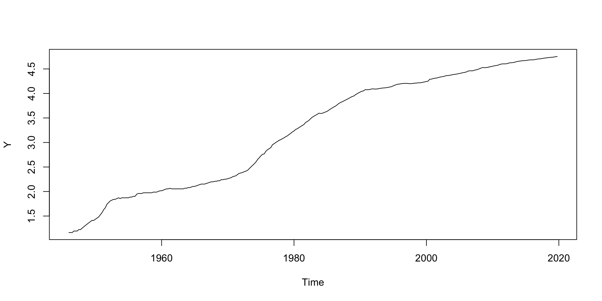
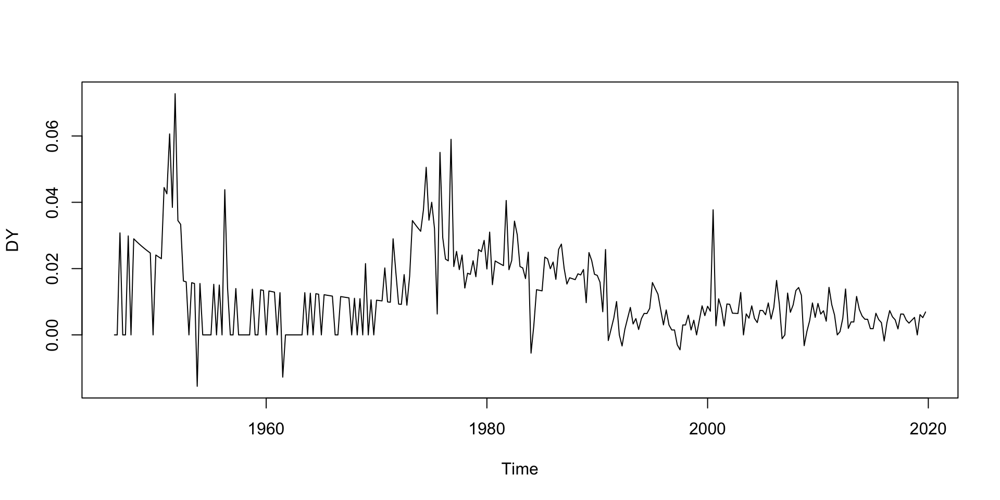

Conditions of Use
pengyunc.github.io/TSAF_Week6It is possible to open HTML files in the Viewer pane of RStudio
Agenda
Recall the unit root test results for log CPI from Self-directed Activities 5.

An upward trend is obvious
Carry out an ADF test of Y, present (i) the estimated test equation, (ii) the \(t_{\text{ADF}}\) test statistic, 5% critical value and decision, and (iii) its \(p\)-value.
The test equation is: \[\Delta Y_{t}=\beta_{0}+\beta_{1}t+\varphi Y_{t-1}+\sum^{p-1}_{k=1}\psi_{k} \Delta Y_{t-k}+U_{t}\] The hypotheses are: \[\begin{align} H_{0}:&\;\varphi=0& &\textsf{($Y_{t}$ has a unit root)}\\ H_{1}:&\;\varphi<0& &\textsf{($Y_{t}$ does not have a unit root)} \end{align}\] The number of lags of \(\Delta Y_{t}\) (i.e., \(p-1\)) is selected by an information criterion (AIC), where \(p\) is the order of the underlying AR model.
###############################################
# Augmented Dickey-Fuller Test Unit Root Test #
###############################################
Test regression trend
Call:
lm(formula = z.diff ~ z.lag.1 + 1 + tt + z.diff.lag)
Residuals:
Min 1Q Median 3Q Max
-0.031901 -0.005565 -0.000645 0.004216 0.045287
Coefficients:
Estimate Std. Error t value Pr(>|t|)
(Intercept) 8.657e-03 3.805e-03 2.275 0.0236 *
z.lag.1 2.743e-04 2.772e-03 0.099 0.9212
tt -2.428e-05 3.733e-05 -0.651 0.5159
z.diff.lag 5.147e-01 5.049e-02 10.193 <2e-16 ***
---
Signif. codes: 0 '***' 0.001 '**' 0.01 '*' 0.05 '.' 0.1 ' ' 1
Residual standard error: 0.01025 on 290 degrees of freedom
Multiple R-squared: 0.3263, Adjusted R-squared: 0.3193
F-statistic: 46.82 on 3 and 290 DF, p-value: < 2.2e-16
Value of test-statistic is: 0.099 16.8276 3.9857
Critical values for test statistics:
1pct 5pct 10pct
tau3 -3.98 -3.42 -3.13
phi2 6.15 4.71 4.05
phi3 8.34 6.30 5.36Next create the first difference time series \(\Delta Y_{t}\) and a time series plot. Decide whether a trend is required for a unit root test for \(\Delta Y_{t}\).

Carry out the unit root test on \(\Delta Y_{t}\). Conclude how many differences are required for log CPI to be stationary.
adf <- ur.df(DY, type = "drift", selectlags = "AIC")
p_adf <- punitroot(adf@teststat[1], trend = "c", statistic = "t")
summary(adf)
###############################################
# Augmented Dickey-Fuller Test Unit Root Test #
###############################################
Test regression drift
Call:
lm(formula = z.diff ~ z.lag.1 + 1 + z.diff.lag)
Residuals:
Min 1Q Median 3Q Max
-0.030300 -0.004863 -0.000533 0.003937 0.039013
Coefficients:
Estimate Std. Error t value Pr(>|t|)
(Intercept) 0.0031901 0.0008224 3.879 0.00013 ***
z.lag.1 -0.2581651 0.0501006 -5.153 4.75e-07 ***
z.diff.lag -0.4253700 0.0530437 -8.019 2.64e-14 ***
---
Signif. codes: 0 '***' 0.001 '**' 0.01 '*' 0.05 '.' 0.1 ' ' 1
Residual standard error: 0.009393 on 290 degrees of freedom
Multiple R-squared: 0.3652, Adjusted R-squared: 0.3608
F-statistic: 83.41 on 2 and 290 DF, p-value: < 2.2e-16
Value of test-statistic is: -5.1529 13.2782
Critical values for test statistics:
1pct 5pct 10pct
tau2 -3.44 -2.87 -2.57
phi1 6.47 4.61 3.79The estimated ADF test equation is:
\[\widehat{\Delta(\Delta Y_{t})}=0.0031-0.258\Delta Y_{t-1}-0.4253\Delta(\Delta Y_{t-1})\]
Carry out the unit root test on \(\Delta Y_{t}\). Conclude how many differences are required for log CPI to be stationary.
adf <- ur.df(DY, type = "drift", selectlags = "AIC")
p_adf <- punitroot(adf@teststat[1], trend = "c", statistic = "t")
summary(adf)
###############################################
# Augmented Dickey-Fuller Test Unit Root Test #
###############################################
Test regression drift
Call:
lm(formula = z.diff ~ z.lag.1 + 1 + z.diff.lag)
Residuals:
Min 1Q Median 3Q Max
-0.030300 -0.004863 -0.000533 0.003937 0.039013
Coefficients:
Estimate Std. Error t value Pr(>|t|)
(Intercept) 0.0031901 0.0008224 3.879 0.00013 ***
z.lag.1 -0.2581651 0.0501006 -5.153 4.75e-07 ***
z.diff.lag -0.4253700 0.0530437 -8.019 2.64e-14 ***
---
Signif. codes: 0 '***' 0.001 '**' 0.01 '*' 0.05 '.' 0.1 ' ' 1
Residual standard error: 0.009393 on 290 degrees of freedom
Multiple R-squared: 0.3652, Adjusted R-squared: 0.3608
F-statistic: 83.41 on 2 and 290 DF, p-value: < 2.2e-16
Value of test-statistic is: -5.1529 13.2782
Critical values for test statistics:
1pct 5pct 10pct
tau2 -3.44 -2.87 -2.57
phi1 6.47 4.61 3.79The \(t\)-statistic is \(-5.1529\), and the \(5\%\) critical value is \(-2.87\).
Carry out the unit root test on \(\Delta Y_{t}\). Conclude how many differences are required for log CPI to be stationary.
The \(t\)-statistic is \(-5.1529\), and the \(5\%\) critical value is \(-2.87\).
Since \(-5.1539<-2.87\), we reject \(H_0\): \(\Delta Y_{t}\) has a unit root.
Specify and estimate an appropriate ARIMA(\(p,d,q\)) model for \(Y_{t}\).
Code Structure
Set up container matrices for AICc values (AICc) and Ljung-Box test \(p\)-values (LBp)
For each \((p,q)\) combination:
Fit the ARIMA(\(p,1,q\)) model with Arima() function, and extract AICc
Extract the Ljung-Box \(p\)-values with Box.test() function
Choose the model with the lowest AICc, and verify that its
Specify and estimate an appropriate ARIMA(\(p,d,q\)) model for \(Y_{t}\).
library(forecast)
pmax <- 4
qmax <- 4
LBp <- matrix(nrow=pmax+1, ncol=qmax+1)
rownames(LBp) <- paste0("p=", 0:pmax)
colnames(LBp) <- paste0("q=", 0:qmax)
AICc <- LBp
for (p in 0:pmax){
for (q in 0:qmax){
eq <- Arima(DY, order=c(p,0,q))
LBp[p+1,q+1] <- Box.test(eq$residuals, lag = 8,
type = "Ljung-Box", fitdf = p+q)$p.value
AICc[p+1,q+1] <- eq$aicc
}
}Specify and estimate an appropriate ARIMA(\(p,d,q\)) model for \(Y_{t}\).
Residual autocorrelation result (TRUE if \(H_{0}\) maintained)
q=0 q=1 q=2 q=3 q=4
p=0 TRUE TRUE TRUE TRUE TRUE
p=1 TRUE TRUE FALSE FALSE FALSE
p=2 TRUE TRUE FALSE FALSE FALSE
p=3 TRUE TRUE FALSE FALSE FALSE
p=4 TRUE TRUE TRUE FALSE TRUEModel to minimise AICc:
q=0 q=1 q=2 q=3 q=4
p=0 FALSE FALSE FALSE FALSE FALSE
p=1 FALSE FALSE FALSE TRUE FALSE
p=2 FALSE FALSE FALSE FALSE FALSE
p=3 FALSE FALSE FALSE FALSE FALSE
p=4 FALSE FALSE FALSE FALSE FALSECombining a difference and a linear trend in the model requires some careful interpretation - write out the model in equation form and interpret the coefficients.
To estimate the ARIMA(1,0,3) model for \(\Delta Y_{t}\), with that difference already taken in computing DY:
ar1 ma1 ma2 ma3 intercept
0.8316 -0.6377 0.2380 0.1276 0.0120 In equation form, this estimated model can be written as:
\[\begin{align} \Delta Y_{t}&=0.0120 +\widehat{\Delta Z}_{t}\\ \widehat{\Delta Z}_{t}&=0.8316\widehat{\Delta Z}_{t-1}+\widehat{U}_{t}-0.6377\widehat{U}_{t-1}+0.2380\widehat{U}_{t-2}+0.1276\widehat{U}_{t-3} \end{align}\]
The intercept of the model, \(\widehat{\beta}_{1}=0.0120\), implies the estimated mean rate of inflation is \(0.0120\), or \(1.2\%\) per quarter (this is a quarterly time series).
The same model may be estimated as an ARIMA(\(1,1,3\)) model for \(Y_{t}\):
ar1 ma1 ma2 ma3 drift
0.8316 -0.6377 0.2380 0.1276 0.0120 \[\begin{align} Y_{t}&=0.0120t +\widehat{Z}_{t}\\ \widehat{\Delta Z}_{t}&=0.8316\widehat{\Delta Z}_{t-1}+\widehat{U}_{t}-0.6377\widehat{U}_{t-1}+0.2380\widehat{U}_{t-2}+0.1276\widehat{U}_{t-3} \end{align}\]
Note
include.drift = TRUE option is necessary for the inclusion of \(\beta_{1}\) when the differencing is specified under order = c(1,1,3) rather than taking the difference beforehand and included in the model as DY.xreg argument: ar1 ma1 ma2 ma3 intercept
0.8316 -0.6377 0.2380 0.1276 0.0120 ar1 ma1 ma2 ma3 drift
0.8316 -0.6377 0.2380 0.1276 0.0120 DY) will generate forecasts for \(\Delta Y_{t}\) (inflation), while the second is model for \(Y_{t}\) (Y, log CPI). In previous applications we have modeled the linear trend using the observation dates \(\text{Time}_{t}\). Set up the same ARIMA\((p,d,q)\) model for \(Y_{t}\) as (c), but use the observation dates instead.
Here are the first and last few observation indices and dates:
In previous applications we have modeled the linear trend using the observation dates \(\text{Time}_{t}\). Set up the same ARIMA\((p,d,q)\) model for \(Y_{t}\) as (c), but use the observation dates instead.
We start from the trend model with observation indices (\(t\)): \[\begin{align} Y_{t}&=\mathbb{E}(Y_{t})+Z_{t}\\ \textsf{where}\quad \mathbb{E}(Y_{t})&=\beta_{0}+\textcolor{black}{\beta_{1}}t & &\textsf{(Trend model with observation indices)}\\ \mathbb{E}(Y_{t})&=\beta^{*}_{0}+\beta^{*}_{1}\text{Time}_{t} & &\textsf{(Trend model with observation dates)} \end{align}\]
In previous applications we have modeled the linear trend using the observation dates \(\text{Time}_{t}\). Set up the same ARIMA\((p,d,q)\) model for \(Y_{t}\) as (c), but use the observation dates instead.
We start from the trend model with observation indices (\(t\)): \[\begin{align} Y_{t}&=\mathbb{E}(Y_{t})+Z_{t}\\ \textsf{where}\quad \mathbb{E}(Y_{t})&=\beta_{0}+\textcolor{purple}{\beta_{1}}t & &\textsf{(Trend model with observation indices)}\\ \mathbb{E}(Y_{t})&=\beta^{*}_{0}+\beta^{*}_{1}\text{Time}_{t} & &\textsf{(Trend model with observation dates)} \end{align}\]
In previous applications we have modeled the linear trend using the observation dates \(\text{Time}_{t}\). Set up the same ARIMA\((p,d,q)\) model for \(Y_{t}\) as (c), but use the observation dates instead.
We start from the trend model with observation indices (\(t\)): \[\begin{align} Y_{t}&=\mathbb{E}(Y_{t})+Z_{t}\\ \textsf{where}\quad \mathbb{E}(Y_{t})&=\beta_{0}+\textcolor{purple}{\beta_{1}}t & &\textsf{(Trend model with observation indices)}\\ \mathbb{E}(Y_{t})&=\beta^{*}_{0}+\textcolor{teal}{\beta^{*}_{1}}\text{Time}_{t} & &\textsf{(Trend model with observation dates)} \end{align}\]
In previous applications we have modeled the linear trend using the observation dates \(\text{Time}_{t}\). Set up the same ARIMA\((p,d,q)\) model for \(Y_{t}\) as (c), but use the observation dates instead.
We start from the trend model with observation indices (\(t\)): \[\begin{align} Y_{t}&=\mathbb{E}(Y_{t})+Z_{t}\\ \textsf{where}\quad \mathbb{E}(Y_{t})&=\beta_{0}+\textcolor{purple}{\beta_{1}}t & &\textsf{(Trend model with observation indices)}\\ \mathbb{E}(Y_{t})&=\beta^{*}_{0}+\textcolor{teal}{\beta^{*}_{1}}\text{Time}_{t} & &\textsf{(Trend model with observation dates)} \end{align}\]
In previous applications we have modeled the linear trend using the observation dates \(\text{Time}_{t}\). Set up the same ARIMA\((p,d,q)\) model for \(Y_{t}\) as (c), but use the observation dates instead.
t <- 1:length(Y)
eq_b <- Arima(Y, order = c(1,1,3), include.drift = TRUE)
# Equivalently eq_b_xreg <- Arima(Y, order = c(1,1,3), xreg = t)
print(round(eq_b$coef,4)) ar1 ma1 ma2 ma3 drift
0.8316 -0.6377 0.2380 0.1276 0.0120 Time <- time(Y)
# include.drift = FALSE is actually the default, but it is included here to
# emphasise the point
eq_c <- Arima(Y, order = c(1,1,3), xreg = Time, include.drift = FALSE)
print(round(eq_c$coef,4)) ar1 ma1 ma2 ma3 xreg
0.8317 -0.6377 0.2379 0.1275 0.0478 \(\textcolor{teal}{\hat{\beta_{1}^*}}/\textcolor{purple}{\hat{\beta_{1}}}\)
Use the chosen model to calculate a forecast of
Note that we have selected ARMA(1,3) for \(\Delta Y_{t}\equiv \Delta\log(CPI_{t})\) in Exercise 1(c).
Forecast 2020Q1 inflation: \(\Delta{}Y_{2020Q1}=\log(CPI_{2020Q1})-\log(CPI_{2019Q4})\)
The inflation forecast is based on an approximation…
Recall from Week 1 tutorial that for small \(r\) values, \(\log(1+r)\approx r\): \[\begin{align} CPI_{2019Q4}(1+\text{inflation}_{2020Q1})&=CPI_{2020Q1}\\ \log(1+\text{inflation}_{2020Q1})&=\log(CPI_{2020Q1})-\log(CPI_{2019Q4})\\ \implies\qquad \color{blue}{\text{inflation}_{2020Q1}}&\approx\log(CPI_{2020Q1})-\log(CPI_{2019Q4}) \end{align}\]
Use the chosen model to calculate a forecast of inflation,
Note that we have selected ARMA(1,3) for \(\Delta Y_{t}\equiv \Delta\log(CPI_{t})\) in Exercise 1(c).
Forecast 2020Q1 inflation: \(\Delta{}Y_{2020Q1}=\log(CPI_{2020Q1})-\log(CPI_{2019Q4})\)
Qtr1
2020 0.0071Forecast 2020Q1 \(\log(CPI_{2020Q1})\equiv Y_{2020Q1}\):
Use the chosen model to calculate a forecast of inflation,
Note that we have selected ARMA(1,3) for \(\Delta Y_{t}\equiv \Delta\log(CPI_{t})\) in Exercise 1(c).
Forecast 2020Q1 inflation: \(\Delta{}Y_{2020Q1}=\log(CPI_{2020Q1})-\log(CPI_{2019Q4})\)
Qtr1
2020 0.0071Forecast 2020Q1 \(\log(CPI_{2020Q1})\equiv Y_{2020Q1}\): \[\widehat{\mathbb{E}}(Y_{2020Q1}\mid\mathscr{Y}_{2019Q4})=Y_{2019Q4}+\textcolor{purple}{\widehat{\mathbb{E}}(\Delta Y_{n+1}\mid\mathscr{Y}_{n})}\]
Use the chosen model to calculate a forecast of inflation,
Note that we have selected ARMA(1,3) for \(\Delta Y_{t}\equiv \Delta\log(CPI_{t})\) in Exercise 1(c).
First forecast \(\widehat{\mathbb{E}}(\Delta Y_{2020Q1}\mid\mathscr{Y}_{2019Q4})\), then obtain \(\widehat{\mathbb{E}}(\log(CPI_{2020Q1})\mid\mathscr{Y}_{2019Q4})\) using the following relationship: \[\widehat{\mathbb{E}}(Y_{2020Q1}\mid\mathscr{Y}_{2019Q4})=Y_{2019Q4}+\widehat{\mathbb{E}}(\Delta Y_{n+1}\mid\mathscr{Y}_{n})\]
As an alternative, we could directly forecast Y with eq_b as previously defined:
# Recall: eq_b <- Arima(Y, order = c(1, 1, 3), include.drift = TRUE)
Forecast_logCPI_2020q1 <- forecast(eq_b, h=1)$mean
print(round(Forecast_logCPI_2020q1,4)) Qtr1
2020 4.7624eq_c as previously defined, where observation dates \(\text{Time}_{t}\) is used for the linear trend.
Use the chosen model to calculate a forecast of inflation, \(\log(CPI_{t})\) and the
Note that we have selected ARMA(1,3) for \(\Delta Y_{t}\equiv \Delta\log(CPI_{t})\) in Exercise 1(c).
How can we forecast the 2020Q1 CPI?
We know that \[\begin{align} \color{blue}{\text{inflation}_{2020Q1}}&\approx\log(CPI_{2020Q1})-\log(CPI_{2019Q4}) \end{align}\]
thus we have \(\widehat{CPI}_{2020Q1}=CPI_{2019Q4}\times(1+\widehat{\operatorname{inflation}}_{2020Q1})\)
Use the chosen model to calculate a forecast of inflation, \(\log(CPI_{t})\) and the
How can we forecast the 2020Q1 CPI?
First approach: \(\widehat{CPI}_{2020Q1}=CPI_{2019Q4}\times(1+\widehat{\operatorname{inflation}}_{2020Q1})\)
Qtr1
2020 117.0254Use the chosen model to calculate a forecast of inflation, \(\log(CPI_{t})\) and the
Remarks on the CPI forecasts:
Both approaches are approximations.
First approach: \(\widehat{CPI}_{2020Q1}=CPI_{2019Q4}\times (1+\color{purple}{\underbrace{\widehat{\text{inflation}}_{2020Q1}}_{\text{approximation}}})\)
Second approach: \(\widehat{CPI}_{2020Q1}=\exp(\log(\widehat{CPI}_{2020Q1}))\)
Use the chosen model to calculate a forecast of inflation, \(\log(CPI_{t})\) and the
Remarks on the CPI forecasts:
Both approaches are approximations.
First approach: \(\widehat{CPI}_{2020Q1}=CPI_{2019Q4}\times (1+\color{purple}{\underbrace{\widehat{\text{inflation}}_{2020Q1}}_{\text{approximation}}})\)
Use the chosen model to calculate a forecast of inflation, \(\log(CPI_{t})\) and the
Remarks on the CPI forecasts:
Both approaches are approximations.
First approach: \(\widehat{CPI}_{2020Q1}=CPI_{2019Q4}\times (1+\color{purple}{\underbrace{\widehat{\text{inflation}}_{2020Q1}}_{\text{approximation}}})\)
Consider a time series model consisting of a trend equation and AR(p) equation: \[\begin{align} Y_{t}&=X_{t}^{\top}\beta +Z_{t}\\ Z_{t}&=\phi_{1}Z_{t-1}+\cdots+\phi_{p}Z_{t-p}+U_{t} \end{align}\]
Note the coefficients on \(X_{t}\) in the original model (\(\beta\)) differ from those in the ADF test equation (\(\beta^*\)).
Consider a time series model consisting of a trend equation and AR(p) equation: \[\begin{align} Y_{t}&=X_{t}^{\top}\beta +Z_{t}\\ Z_{t}&=\phi_{1}Z_{t-1}+\cdots+\phi_{p}Z_{t-p}+U_{t} \end{align}\]
Let’s work through an example of how a specific time series model can be rearranged into the ADF equation. Consider a model with intercept and linear trend, and 2 lags in the AR equation: \[\begin{align}
Y_{t}&=\beta_{0}+\beta_{1} t+Z_{t}\\
Z_{t}&=\phi_{1}Z_{t-1}+\phi_{2}Z_{t-2}+U_{t}
\end{align}\]
Consider a model with intercept and linear trend, and 2 lags in the AR equation: \[\begin{align}
Y_{t}&=\beta_{0}+\beta_{1} t+Z_{t}\\
Z_{t}&=\phi_{1}Z_{t-1}+\phi_{2}Z_{t-2}+U_{t}
\end{align}\]
\[\begin{align} Z_{t}&=\phi_{1}Z_{t-1}+\phi_{2}Z_{t-2}+U_{t}\\ Z_{t}&=\phi_{1}Z_{t-1}\textcolor{magenta}{+\phi_{2}Z_{t-1}-\phi_{2}Z_{t-1}}+\phi_{2}Z_{t-2}+U_{t}\\ Z_{t}&=\textcolor{blue}{(\phi_{1}+\phi_{2})Z_{t-1}}\textcolor{green}{-\phi_{2}\Delta Z_{t-1}}+U_{t}\\ Z_{t}\textcolor{red}{-Z_{t-1}}&=\textcolor{red}{-Z_{t-1}}+(\phi_{1}+\phi_{2})Z_{t-1}-\phi_{2}\Delta Z_{t-1}+U_{t}\\ \Delta Z_{t}&=\varphi Z_{t-1}+\psi_{1}\Delta Z_{t-1}+U_{t} \end{align}\] where \(\varphi=\phi_{1}+\phi_{2}-1\) and \(\psi_{1}=-\phi_{2}\).
From Step 1 we have \[\textcolor{red}{\Delta Z_{t}}=\varphi \textcolor{blue}{Z_{t-1}}+\psi_{1}\textcolor{magenta}{\Delta Z_{t-1}}+U_{t}.\] Using the trend equation \(Y_{t}=\beta_{0}+\beta_{1}t+Z_{t}\), derive the following: \[\begin{align} \textcolor{red}{\Delta Z_{t}}\;&\textcolor{red}{=\Delta Y_{t}-\beta_{1}}\\ \textcolor{magenta}{\Delta Z_{t-1}}\;&\textcolor{magenta}{=\Delta Y_{t-1}-\beta_{1}}\\ \textcolor{blue}{Z_{t-1}}\;&\textcolor{blue}{=Y_{t-1}-\beta_{0}-\beta_{1}(t-1)} \end{align}\] substituting gives \((\textcolor{red}{\Delta Y_{t}-\beta_{1}})=\varphi(\textcolor{blue}{Y_{t-1}-\beta_{0}-\beta_{1}(t-1)})+\psi_{1}(\textcolor{magenta}{\Delta Y_{t-1}-\beta_{1}})+U_{t}\)
From Step 2 we have: \[(\textcolor{red}{\Delta Y_{t}-\beta_{1}})=\varphi(\textcolor{blue}{Y_{t-1}-\beta_{0}-\beta_{1}(t-1)})+\psi_{1}(\textcolor{magenta}{\Delta Y_{t-1}-\beta_{1}})+U_{t}\] Simplify this to the form of ADF test equation: \[\Delta Y_{t}=\varphi Y_{t-1}+\textcolor{green}{\beta_{0}^{*}}+\textcolor{teal}{\beta_{1}^{*}}t+\psi_{1}\Delta Y_{t-1}+U_{t}\] where \(\textcolor{green}{\beta_{0}^{*}=\beta_{1}-\varphi\beta_{0}+\varphi\beta_{1}-\psi_{1}\beta_{1}}\) and \(\textcolor{teal}{\beta_{1}^{*}=-\varphi\beta_{1}}\).
\[\begin{align} (\Delta Y_{t}-\beta_{1})&=\varphi(Y_{t-1}-\beta_{0}-\beta_{1}(t-1))+\psi_{1}(\Delta Y_{t-1}-\beta_{1})+U_{t}\\ \Delta Y_{t}&=\beta_{1}+\varphi Y_{t-1}-\varphi\beta_{0}-\varphi\beta_{1} t+\varphi\beta_{1}+\psi_{1}\Delta Y_{t-1}-\psi_{1}\beta_{1}+U_{t}\\ \Delta Y_{t}&=\varphi Y_{t-1}+\beta_{1}-\varphi\beta_{0}+\varphi\beta_{1}-\psi_{1}\beta_{1}-\varphi\beta_{1}t+\psi_{1}\Delta Y_{t-1}+U_{t}\\ \Delta Y_{t}&=\varphi Y_{t-1}+\textcolor{green}{\underbrace{(\beta_{1}-\varphi\beta_{0}+\varphi\beta_{1}-\psi_{1}\beta_{1})}_{\equiv\beta_{0}^{*}}}+\textcolor{teal}{\underbrace{(-\varphi\beta_{1})}_{\equiv\beta_{1}^{*}}}t+\psi_{1}\Delta Y_{t-1}+U_{t}\\ \Delta Y_{t}&=\varphi Y_{t-1}+\textcolor{green}{\beta_{0}^{*}}+\textcolor{teal}{\beta_{1}^{*}}t+\psi_{1}\Delta Y_{t-1}+U_{t} \end{align}\] where \(\textcolor{green}{\beta_{0}^{*}=\beta_{1}-\varphi\beta_{0}+\varphi\beta_{1}-\psi_{1}\beta_{1}}\) and \(\textcolor{teal}{\beta_{1}^{*}=-\varphi\beta_{1}}\).
Thank you for coming!
Access Slides: pengyunc.github.io/TSAF_Week6